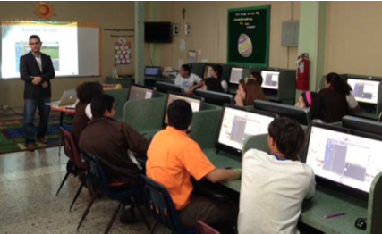
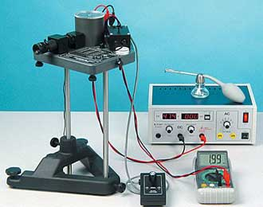

Experience:
2013 AGMUS Reasearch Symposium, Caribel Hilton Hotel, P.R.

Reasearch Poster Presentation, September 14, 2013
Presented a poster of the research done at Carnegie Mellon University, Pitsburgh, P.A. Won a medal for being one of the top 20 best poster presentations. I would like to thank the C.C.C.E for the opportunity to present my work. See the pictures by clicking here.
Carnegie Mellon University, Pittsburgh, P.A.
Research RISS-REU June 3rd, 2013 - August 12, 2013
Tekkotsu C++ C#
Working under the instruction of Dr. David S. Touretzky. The iRobot Create has been a popular mobile robot in robotics education. This is due to its affordability and potential for expandability. Currently, Tekkotsu, an open source framework that supports software development for a variety of robotic platforms, supports the Create. Recently, the Kobuki Yujin Robot, a new robotic platform, has reached the market and has become the mobile base for the TurtleBot 2 from Willow Garage, a personal robot kit using the ROS open-source framework. In this reasearch we developed a Kobuki driver that the Tekkotsu framework can support it in a familiar way as the iRobot Create.
Working under the instruction of Dr. David S. Touretzky. The iRobot Create has been a popular mobile robot in robotics education. This is due to its affordability and potential for expandability. Currently, Tekkotsu, an open source framework that supports software development for a variety of robotic platforms, supports the Create. Recently, the Kobuki Yujin Robot, a new robotic platform, has reached the market and has become the mobile base for the TurtleBot 2 from Willow Garage, a personal robot kit using the ROS open-source framework. In this reasearch we developed a Kobuki driver that the Tekkotsu framework can support it in a familiar way as the iRobot Create.
Spring 2013 Pre-College Research Symposium, San Juan, Puerto Rico.

Judge May 11, 2013
JAVA C++ HTML
Served as a Computer Engineering/Computer Science Judge at the Spring 2013 Pre-College Symposium held on May 11, 2013 at the Caribe Hilton Hotel, San Juan, Puerto Rico. See the Thank You letter!
Served as a Computer Engineering/Computer Science Judge at the Spring 2013 Pre-College Symposium held on May 11, 2013 at the Caribe Hilton Hotel, San Juan, Puerto Rico. See the Thank You letter!
Winter 2012 Pre-College Research Symposium, San Juan, Puerto Rico.
Judge December 15, 2012
JAVA C++ HTML
Served as a Computer Engineering/Computer Science Judge at the Winter 2012 Pre-College Symposium held on December 15, 2012 at the Sheraton Hotel, San Juan, Puerto Rico.
Served as a Computer Engineering/Computer Science Judge at the Winter 2012 Pre-College Symposium held on December 15, 2012 at the Sheraton Hotel, San Juan, Puerto Rico.
Spring 2012 Pre-College Research Symposium, San Juan, Puerto Rico.

Judge May 12, 2012
JAVA C++ HTML
Served as a Computer Engineering/Computer Science Judge at the Spring 2012 Pre-College Symposium held on May 12, 2012 at the Sheraton Hotel, San Juan, Puerto Rico.
Served as a Computer Engineering/Computer Science Judge at the Spring 2012 Pre-College Symposium held on May 12, 2012 at the Sheraton Hotel, San Juan, Puerto Rico.
Providing Workshops To Students Around Puerto Rico and St. Thomas/St.Croix

October 2012-Present
JAVA SCRATCH GameMaker
Working under the instruction of Dr. Arratia. Providing many computer workshops to students including JAVA, Scratch and Game Maker at different locations in the Caribbean.
Working under the instruction of Dr. Arratia. Providing many computer workshops to students including JAVA, Scratch and Game Maker at different locations in the Caribbean.
Millikan Oil Drop Experiment

January 2012-May 2012
PASCO
The oil drop experiment was an experiment performed by Robert A. Millikan and Harvey Fletcher in 1909 to measure the elementary electric charge (the charge of the electron). Under the supervision of Physics Prof. Carlos Neira from Universidad del Turabo, me and 4 other students (Jemyelbi Figueroa, Alfredo Bermudez, Ivan Nazario and Raymond Pedraza) we were able to accomplish this experiment using the PASCO scientific Model AP-8210.
The oil drop experiment was an experiment performed by Robert A. Millikan and Harvey Fletcher in 1909 to measure the elementary electric charge (the charge of the electron). Under the supervision of Physics Prof. Carlos Neira from Universidad del Turabo, me and 4 other students (Jemyelbi Figueroa, Alfredo Bermudez, Ivan Nazario and Raymond Pedraza) we were able to accomplish this experiment using the PASCO scientific Model AP-8210.